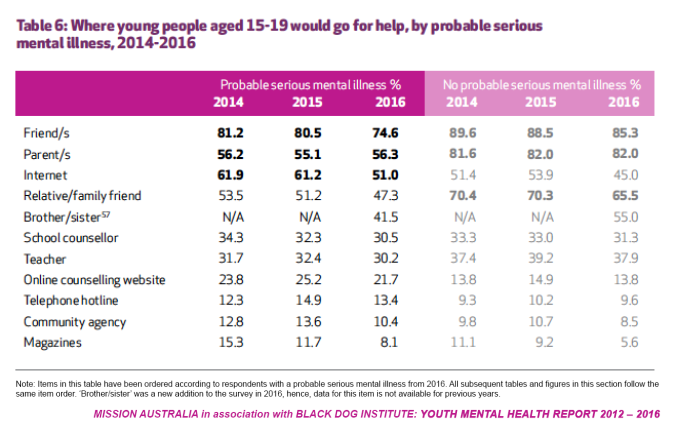

Mindfull
Purpose
Something I'm really passionate about is furthering the advancement for mental health to both be stripped of its negative stigma and to provide aid for the effects it may cause. I decided to research areas where solutions could possibly be provided. Along the way, I discovered Headspace. Inspired by both their ambitions and design, I decided to come up with my own solution to help the battle for mental health.
Problems
Personally coming from a history where I visibly saw the importance of mental health, I narrowed down several recurring problems that I decided to solve:
The margin of people who don't view mental health as a serious, or even real condition.
The lack of accountability when it comes to self-care.
The spiraling effects unhealthy introspection can cause.
The powerless feeling during physical emergencies, such as anxiety attacks.
When I designed Mindfull, I wanted to account for at least the problems listed above, though there are definitely far more. Below are the solutions I came up with.
Dedicated platform
With a certain portion of the population criticizing the validty of mental health, people have become more wary about sharing their personal dealings with it, especially publically.
Mindfull would act as a separate platform entirely to help provide a sense of security and separation from regular social media. Just like how one portrays themselves differently between Snapchat and LinkedIn, Mindfull is a platform where people can focus on their health.
Quick and accessible relief
Acknowledging the benefits meditation can have for your health and following in Headspace's footsteps (really good work), Mindfull also incorporates this into one of its functionalities.
I decided to also add breathing as a separate category because a person might not want to go through a whole meditiation session but may just want to have a quick moment to regather themselves.
Not alone
One of the main ideas behind Mindfull is not only to become self-aware, but to also have the option to talk to friends about yourself in a different way. People can choose who they trust and confide in the most to help be part of their journey towards more control.
This tackles two of the problems mentioned earlier: the lack of accountability when it comes to self-care and the powerless feeling during an an emergency, such as an anxiety attack.
Mindfull maintains a feature where after you have initiated and completed an emergency breathing session, it asks you if you want to alert selected friends that you just endured something. This can be useful if someone wants to seek for help after an anxiety attack or any other form of emergency.
Journal
Studies show that writing can help alleviate both mental and physical pains. This provides for healthier introspection, overall improvement in mood, and accessible stress relief.
Mindfull allows for simple and clean organization of your journal. One thing about it that I wanted to emphasize was communication. Some, if not all, of a person's writing could be very intimate and something they want to keep to themselves.
However, there are times when people might not know what to say at the moment but are able to later capture it in words and possibly want to share it with someone.
The difference between this and just simply texting someone how you are feeling is, again, the platform in which the writing is done. It creates a different level of intimacy in comparison to a chat bubble. Mindfull allows for a very easy and swift writing experience as well as providing for quick access to share your words with your friends when you are ready.
Accountability
This can be a long and lonely journey, and sometimes doing it yourself can be hard. This is why I wanted to set up an accountability system.
Mindfull will allow people to set reminders for themselves when to complete a meditation or breathing session to stay consistent with their plan. However, it is easy to lose track or to simply give up. This is why I decided to allow people to set reminders for their friends as well, so that you have another person - a meaningful human interaction - reminding you and motiviating you to keep going versus just the app.
Conclusion
I had a great time designing this project. I was able to learn Origami and gave myself the opportunity to critically solve problems in an area I wish to shape for the better. Thanks for reading!